後備召集或動員法令
召集後備、延長役期或修改動員法，是開戰前最明確的準備動作之一。
報導標題：Russia is funneling the Ukrainian children it abducts into military camps and conscription. Ukrainian lawyer says world 來源 ↗
公開來源整理｜最後更新 2026-10-11 07:29（台北）｜每天早晚更新，出事時加開
📌 10/11（日）每日摘要｜台海 2 級升溫：聯合戰備警巡｜美伊 2 級升溫｜歐洲北約 2 級升溫：戰機緊急升空、機場關閉或交戰規則變更｜烏俄 2 級升溫：外交關係變化或安理會緊急會議｜朝鮮半島 2 級升溫：北韓彈道飛彈發射｜南海 2 級升溫：中菲海上衝突｜以巴紅海 2 級升溫：胡塞攻擊紅海／亞丁灣船隻。降溫訊號：台海、美伊、歐洲北約、烏俄。市場無異常波動。
沒有指標超過門檻
召集後備、延長役期或修改動員法，是開戰前最明確的準備動作之一。
報導標題：Russia is funneling the Ukrainian children it abducts into military camps and conscription. Ukrainian lawyer says world 來源 ↗
中國海警以水砲、衝撞或雷射對菲律賓船隻施壓；美菲共同防禦條約可能被拿出來討論。
報導標題：Video: China Coast Guard Uses Water Cannon During Philippine Medevac 來源 ↗
召回大使、驅逐外交官或關閉使館，代表兩國關係明顯惡化。
報導標題：South Korea Recalls Ambassador From Ukraine Amid Diplomatic Rift Over North Korean POWs 來源 ↗
打擊黎巴嫩、敘利亞、伊拉克或葉門目標，衝突有擴大到多國的風險。
報導標題：Trump rules out Iran strikes before vote; EU weighs Lebanon security mission TV7 Israel News 09 Oct. 來源 ↗
🕊️ 10/10 3 家媒體報導降溫訊號（通話、會談、停火）：討論牆 | 證實川習會談台灣「僅點到為止」！川普：習近平清楚我的想法
無異常（9/9 項有資料）
無異常（1/1 項有資料）
無異常（2/2 項有資料）
無異常（1/6 項有資料）
無異常（5/5 項有資料）
🕊️ 10/10 4 家媒體報導降溫訊號（通話、會談、停火）：Oil falls as Trump comments on Iran talks ease suppl
無異常（3/3 項有資料）
無異常（4/4 項有資料）
無異常（1/1 項有資料）
無異常（5/6 項有資料）
🕊️ 10/10 2 家媒體報導降溫訊號（通話、會談、停火）：U.S., Ukraine and EU officials hold Miami peace talk
無異常（1/1 項有資料）
無異常（1/3 項有資料）
🕊️ 10/11 6 家媒體報導降溫訊號（通話、會談、停火）：川普、普丁通話誰都「不想先掛電話」！俄供柴油降油價惹怒烏克蘭
無異常（1/1 項有資料）
北約國家為因應俄國攻擊而緊急升空或關閉機場，代表前線緊張升高。
報導標題：In Poland, an alert was announced and aircraft were scrambled over Russia's attack on Ukraine 來源 ↗
召集後備、延長役期或修改動員法，是開戰前最明確的準備動作之一。
報導標題：Russia is funneling the Ukrainian children it abducts into military camps and conscription. Ukrainian lawyer says world 來源 ↗
打擊黎巴嫩、敘利亞、伊拉克或葉門目標，衝突有擴大到多國的風險。
報導標題：Trump rules out Iran strikes before vote; EU weighs Lebanon security mission TV7 Israel News 09 Oct. 來源 ↗
紅海與亞丁灣航運受威脅，會推高歐亞運費、保費與油價。
報導標題：Yemen’s Houthis Say They Targeted Two Saudi Tankers; Source Says Encelia Hit by Missile 來源 ↗
北約國家為因應俄國攻擊而緊急升空或關閉機場，代表前線緊張升高。
報導標題：Poland scrambles jets as Russia strikes western Ukraine 來源 ↗
新一輪制裁或出口管制，反映外交施壓升級。
報導標題：Britain to Tighten Sanctions on Russia: Zelenskyy Holds Talks With Burnham and Norwegian Prime Minister 來源 ↗
新一輪制裁或出口管制，反映外交施壓升級。
報導標題：EU vows to maintain pressure on Russia as bloc prepares major new sanctions 來源 ↗
衝突雙方通話、會談或停火協商，可能讓緊張暫緩（不會降低燈號）。
報導標題：U.S., Ukraine and EU officials hold Miami peace talks amid Russia diesel deal 來源 ↗
衝突雙方通話、會談或停火協商，可能讓緊張暫緩（不會降低燈號）。
報導標題：Trump says Russia to immediately supply diesel to US after talks with Putin 來源 ↗
安理會表決、IAEA 報告或北約峰會等正式行動。
報導標題：Athens Backs UN Security Council Meeting on Russian Attacks in Ukraine 來源 ↗
宣布緊急狀態、戒嚴或斷網，常見於戰爭前後或重大動盪時。
報導標題：Russia declares 'state of emergency' as disease spreads amid terrifying plague fears 來源 ↗
宣布緊急狀態、戒嚴或斷網，常見於戰爭前後或重大動盪時。
報導標題：Russia declares 'state of emergency' as disease spreads in two other nations 來源 ↗
歐洲各國增加國防預算、恢復徵兵或發放民防手冊，反映對俄威脅的評估升高。
報導標題：Lithuania puts up to 100 soldiers on Kaliningrad border as officials brace for possible Russian mobilization 來源 ↗
歐洲各國增加國防預算、恢復徵兵或發放民防手冊，反映對俄威脅的評估升高。
報導標題：Lithuania Strengthens Border With Kaliningrad Region After Incident On Latvia-Belarus Border And Reports Of Mobilization 來源 ↗
大量收儲糧食與能源、限制出口或資本管制，可能是為制裁或戰爭預作準備。
報導標題：China Added More Crude to its Massive Stockpile in March, But Outlook Shifts: Russell 來源 ↗
歐洲各國增加國防預算、恢復徵兵或發放民防手冊，反映對俄威脅的評估升高。
報導標題：Poland to deploy Patriots near Ukrainian border, announces $26 billion civil defense plan 來源 ↗
歐洲各國增加國防預算、恢復徵兵或發放民防手冊，反映對俄威脅的評估升高。
報導標題：Poland to spend $26 billion on civil defence, population protection plan, PM says 來源 ↗
晶片、稀土等關鍵材料的出口管制，牽動台灣半導體供應鏈。
報導標題：China's Moonshot Reportedly Seeks Access To More NVDA Blackwell Chips A Week After Trump Official Flagged Export Control 來源 ↗
另有 4 則，見時間軸
衝突雙方通話、會談或停火協商，可能讓緊張暫緩（不會降低燈號）。
報導標題：U.S., Ukraine and EU officials hold Miami peace talks amid Russia diesel deal 來源 ↗
衝突雙方通話、會談或停火協商，可能讓緊張暫緩（不會降低燈號）。
報導標題：Trump says Russia to immediately supply diesel to US after talks with Putin 來源 ↗
打擊黎巴嫩、敘利亞、伊拉克或葉門目標，衝突有擴大到多國的風險。
報導標題：Trump rules out Iran strikes before vote; EU weighs Lebanon security mission TV7 Israel News 09 Oct. 來源 ↗
另有 9 則，見時間軸
召集後備、延長役期或修改動員法，是開戰前最明確的準備動作之一。
報導標題：Russia is funneling the Ukrainian children it abducts into military camps and conscription. Ukrainian lawyer says world 來源 ↗
安理會表決、IAEA 報告或北約峰會等正式行動。
報導標題：Athens Backs UN Security Council Meeting on Russian Attacks in Ukraine 來源 ↗
宣布緊急狀態、戒嚴或斷網，常見於戰爭前後或重大動盪時。
報導標題：Russia declares 'state of emergency' as disease spreads amid terrifying plague fears 來源 ↗
航空公司暫停飛往衝突地區，代表民間評估風險升高。
報導標題：AZAL suspends Moscow flights amid Russian airspace restrictions 來源 ↗
另有 4 則，見時間軸
召回大使、驅逐外交官或關閉使館，代表兩國關係明顯惡化。
報導標題：Ukraine demands an emergency meeting of the UN Security Council over Russia’s massive strikes and dozens killed – Sybiha 來源 ↗
衝突雙方通話、會談或停火協商，可能讓緊張暫緩（不會降低燈號）。
報導標題：Zelensky sends delegation to meet Trump envoys as he hints at secret US-Russia economic talks 來源 ↗
航空公司暫停飛往衝突地區，代表民間評估風險升高。
報導標題：Flag carrier Philippine Airlines (PAL) announced on Friday the cancellation of Manila–Riyadh–Manila flights PR 654 and P 來源 ↗
打擊黎巴嫩、敘利亞、伊拉克或葉門目標，衝突有擴大到多國的風險。
報導標題：Israel Reportedly Prepares Strikes On Iran-Backed Militias In Iraq 來源 ↗
新一輪制裁或出口管制，反映外交施壓升級。
報導標題：Britain to Tighten Sanctions on Russia: Zelenskyy Holds Talks With Burnham and Norwegian Prime Minister 來源 ↗
新一輪制裁或出口管制，反映外交施壓升級。
報導標題：EU vows to maintain pressure on Russia as bloc prepares major new sanctions 來源 ↗
北約國家為因應俄國攻擊而緊急升空或關閉機場，代表前線緊張升高。
報導標題：In Poland, an alert was announced and aircraft were scrambled over Russia's attack on Ukraine 來源 ↗
歐洲各國增加國防預算、恢復徵兵或發放民防手冊，反映對俄威脅的評估升高。
報導標題：Lithuania puts up to 100 soldiers on Kaliningrad border as officials brace for possible Russian mobilization 來源 ↗
另有 10 則，見時間軸
依據：AEI／ISW｜本站自行整理，非全文翻譯
依據：SBS News｜本站自行整理，非全文翻譯
依據：CTP／ISW｜本站自行整理，非全文翻譯
依據：CTP／ISW｜本站自行整理，非全文翻譯
依據：ISW／CTP、NordiskPost、Al Jazeera｜本站自行整理，非全文翻譯
依據：ISW／CTP｜本站自行整理，非全文翻譯
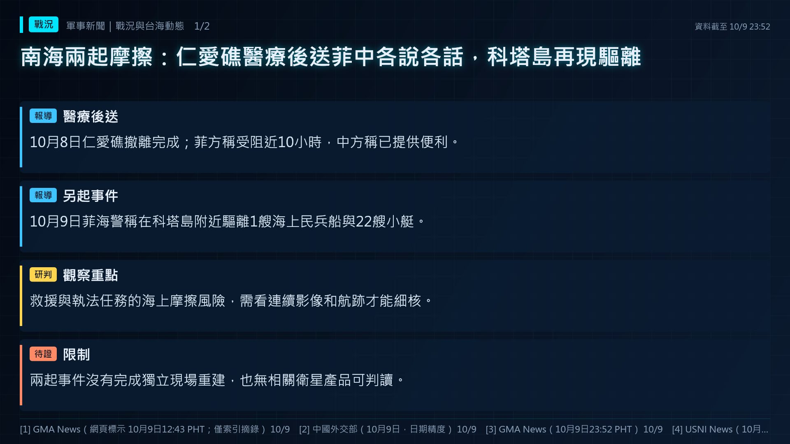
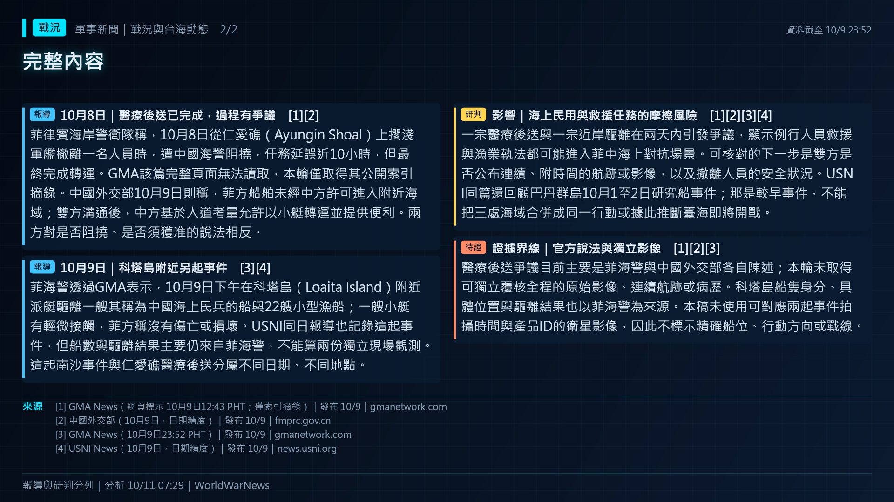
菲律賓海岸警衛隊稱，10月8日從仁愛礁（Ayungin Shoal）上擱淺軍艦撤離一名人員時，遭中國海警阻撓，任務延誤近10小時，但最終完成轉運。GMA該篇完整頁面無法讀取，本輪僅取得其公開索引摘錄。中國外交部10月9日則稱，菲方船舶未經中方許可進入附近海域；雙方溝通後，中方基於人道考量允許以小艇轉運並提供便利。兩方對是否阻撓、是否須獲准的說法相反。
菲海警透過GMA表示，10月9日下午在科塔島（Loaita Island）附近派艇驅離一艘其稱為中國海上民兵的船與22艘小型漁船；一艘小艇有輕微接觸，菲方稱沒有傷亡或損壞。USNI同日報導也記錄這起事件，但船數與驅離結果主要仍來自菲海警，不能算兩份獨立現場觀測。這起南沙事件與仁愛礁醫療後送分屬不同日期、不同地點。
一宗醫療後送與一宗近岸驅離在兩天內引發爭議，顯示例行人員救援與漁業執法都可能進入菲中海上對抗場景。可核對的下一步是雙方是否公布連續、附時間的航跡或影像，以及撤離人員的安全狀況。USNI同篇還回顧巴丹群島10月1至2日研究船事件；那是較早事件，不能把三處海域合併成同一行動或據此推斷臺海即將開戰。
醫療後送爭議目前主要是菲海警與中國外交部各自陳述；本輪未取得可獨立覆核全程的原始影像、連續航跡或病歷。科塔島船隻身分、具體位置與驅離結果也以菲海警為來源。本稿未使用可對應兩起事件拍攝時間與產品ID的衛星影像，因此不標示精確船位、行動方向或戰線。


10月10日上午，烏克蘭札波羅熱市的住宅區遭攻擊。路透轉述州長稱多處受襲、救援人員仍在瓦礫下搜索；美聯社刊登住宅樓受損與現場救援照片。RFE/RL轉述烏克蘭國家緊急服務稱，一棟公寓的入口區遭毀、周邊房屋受損。攻擊者及武器類型依烏方說法記錄，現場照片本身不能證明發射來源。
路透較早轉述州長通報7死、10傷；美聯社其後引述澤倫斯基稱札波羅熱州至少12死、其中3名兒童，至少14傷。RFE/RL頁面後續更新時轉述地方官員稱市內已知11死、其中3名兒童，並引另一較早說法稱至少16傷。這些數字的發言者、更新時間及可能的地域口徑不同，不能挑一個當最終總數，也不能把它們相加。
已確認有住宅受損且搜救仍在進行，近期最需要追蹤的是救援結束後的官方傷亡名冊、傷者更新與建築物安全評估。多家媒體引用烏方通報，增加可追溯性，卻不等於有三份獨立的死傷清冊。此事件顯示平民承受空襲風險；單一城市的這次傷亡數不足以推斷整條戰線移動或全國攻擊頻率變化。
目前來源均以烏方官員或機關為傷亡數根源；未取得逐人清單、俄方對本次攻擊的具體回應，也沒有本次事件的可判讀衛星產品。美聯社照片可佐證建築受損與救援場景，不能據此確認所有傷亡、武器型號或軍事意圖。地圖紅點僅標示札波羅熱市區背景，並非命中點。
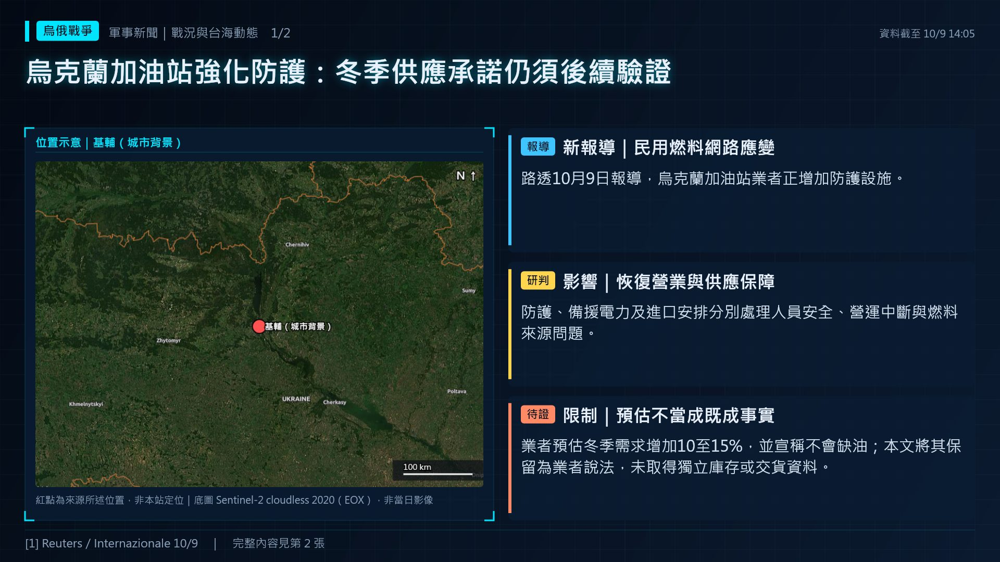
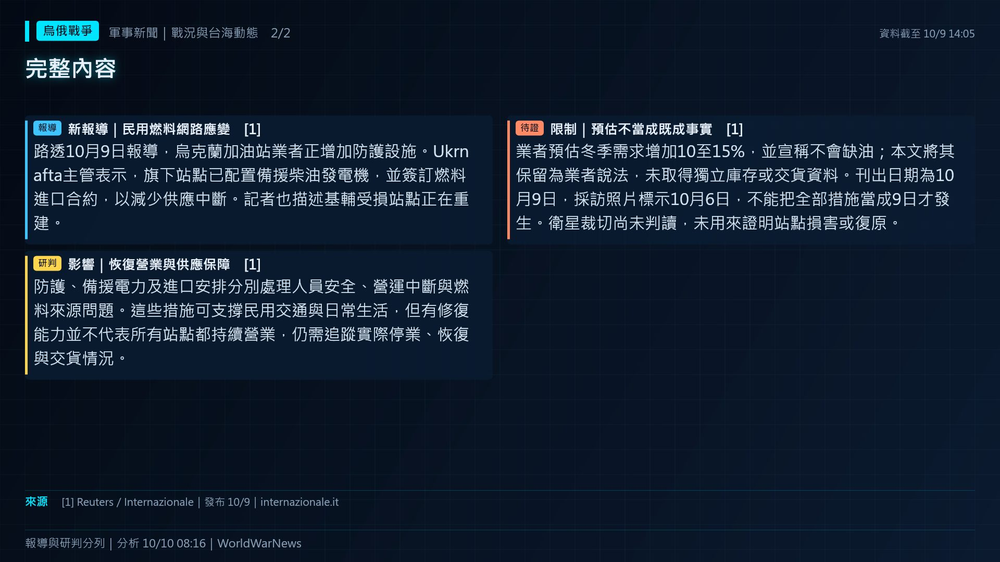
路透10月9日報導，烏克蘭加油站業者正增加防護設施。Ukrnafta主管表示，旗下站點已配置備援柴油發電機，並簽訂燃料進口合約，以減少供應中斷。記者也描述基輔受損站點正在重建。
防護、備援電力及進口安排分別處理人員安全、營運中斷與燃料來源問題。這些措施可支撐民用交通與日常生活，但有修復能力並不代表所有站點都持續營業，仍需追蹤實際停業、恢復與交貨情況。
業者預估冬季需求增加10至15%，並宣稱不會缺油；本文將其保留為業者說法，未取得獨立庫存或交貨資料。刊出日期為10月9日，採訪照片標示10月6日，不能把全部措施當成9日才發生。衛星裁切尚未判讀，未用來證明站點損害或復原。
| 布蘭特原油 | 104.72 | +0.4% | |
| WTI 原油 | 91.85 | +0.4% | |
| 歐洲天然氣 TTF | 81.43 | +3.3% | |
| 台股加權指數 | 49,313 | -1.0% | |
| 台積電 | 2,550 | -1.4% | |
| 美元兌新台幣 | 31.916 | -0.0% | |
| 黃金 | 4,216 | +1.4% | |
| VIX 恐慌指數 | 14.8 | -3.7% |
橘色＝往風險方向變動（油價、天然氣、黃金、美元兌新台幣上漲，台股下跌）；⚠️＝超過 3 個標準差或固定門檻。資料：Yahoo Finance，可能延遲。不構成投資建議。
資料：USNI News 艦隊追蹤（2026-09-14）｜週報已超過 10 天未更新，僅供參考；概略位置。
China & Taiwan Update, October 9, 2026｜Dan Blumenthal、Alexis Turek、Luke Jacobus 等
這份由 AEI 與 ISW 合作的定期報告（資料截至 10 月 8 日）聚焦兩件事。第一，台美兩地檢調在兩起案件中共起訴 11 人，涉嫌把美製管制晶片轉售中國：台灣檢方 10 月 6 日起訴 10 人，指其自 2017 年起偽造最終用戶文件、冒稱代表中科院，台灣當局稱解放軍要把晶片用於飛彈與雷達；美國則於 10 月 1 日逮捕一名加州居民，指控他經新加坡、馬來西亞轉售內含約 3 億美元 Nvidia 晶片的伺服器。作者研判中國要靠先進晶片推動軍隊「智能化」，包括無人機群、電子戰等。第二，菲律賓 10 月 8 日從坐灘的馬德雷山號完成醫療後送，菲方指中國海警刻意拖延數小時；加上 9 月 24 日中方騷擾補給船，作者判斷北京很可能已不再遵守 2024 年的臨時補給安排，目標是讓菲方守礁成本不斷升高。另提及德國否決中遠海運收購案與荷蘭情報的網攻警告。
作者研判：作者認為，北京會持續抬高菲律賓駐守仁愛暗沙的成本，甚至可能逼其撤出，並預期類似壓力會擴及中業島等其他據點。
對台灣的意義：晶片走私案直接牽動台灣出口管制與中科院名義遭冒用的問題，台灣半導體若流入解放軍手中，可能反過來用於對台作戰；南海菲律賓前哨受壓，也關係到台灣南翼與巴士海峽周邊的安全環境。
本站中文導讀，非全文翻譯｜已讀全文
Russia's Attacks in Europe Are Escalating. Here Is How to Push Back.｜Liana Fix、Rafaela Uzan
作者要回答：俄羅斯在烏克蘭以外對歐洲的攻擊愈來愈頻繁，歐洲至今的反應卻緩慢、零散又被動，應如何調整？文章指出，經濟壓力與戰場損耗並未把俄國逼上談判桌，攻擊目標已從支援烏克蘭的鐵路等設施，擴大到政治與產業目標。證據包括：2026 年 8 月初遭破獲的萊比錫／哈勒機場無人機攻擊計畫、10 月初五枚俄製武器闖入摩爾多瓦並爆炸、波蘭屢遭領空侵犯、2025 年 9 月至少 19 架無人機侵入波蘭，以及丹麥軍情評估俄國對北約發動傳統攻擊的風險「low but growing」。同時美國訊號矛盾：川普宣布自德國撤出數千名美軍並取消長程飛彈部署，兵力態勢檢討也可能大砍駐歐兵力。作者主張歐洲不應以牙還牙，而應建立不對稱槓桿：加碼支援烏克蘭對俄縱深打擊、對影子船隊發動更全面行動、重啟動用俄央行凍結資產的討論、擴大演習並明確標示為對俄升級的回應，以及在歐盟層級建立類似北約第四條的緊急安全機制。
作者研判：作者認為若不改變做法，俄國攻擊在歐洲造成重大平民傷亡只是時間問題，危機可能比預期更早到來；法德國內政治與美國期中選舉前的內縮，會讓落實更加困難。
對台灣的意義：美國在多線壓力下調整駐外兵力、盟友對美國承諾的疑慮升高，這種「灰色地帶攻擊加上盟友協調不足」的模式，也是台灣面對中國海纜破壞、無人機侵擾等混合威脅時可借鏡的對照。
本站中文導讀，非全文翻譯｜已讀全文
What to make of China's new air facility in Laos｜Hunter Marston
中國國防部宣布在永珍北方約 50 公里的 Ban Keun 機場設立由中方出資的聯合保障訓練中心與中寮友誼航空學院，名義上是培訓寮國空軍飛行員。作者引用衛星影像指出跑道約 2,000 公尺，可起降殲-10、殲-11 與運-20B，但不足以供轟炸機使用。評論界對它與柬埔寨雲壤海軍基地是否構成海空互補看法分歧；作者認為寮國高度依賴中國投資與債務，此設施配合雲壤，等於從空中與海上兩側包抄越南。結論是長期意義取決於解放軍實際用途、是否轉為專屬基地，以及跑道是否延長以容納轟-6。
對台灣的意義：顯示解放軍正以「訓練中心」名義在東南亞擴充海外據點，若日後升級為可起降轟炸機的基地，將改變南海周邊兵力投射格局，也牽動台灣南向航運與區域安全評估。
本站中文導讀，非全文翻譯｜已讀全文
| 日期 | 共機架次 |
|---|---|
| 10/10 | 21 |
| 10/9 | 2 |
| 10/8 | 3 |
| 10/7 | 14 |
| 10/3 | 5 |
| 10/2 | 6 |
| 10/1 | 23 |
| 9/30 | 9 |
| 9/29 | 3 |
| 9/28 | 3 |
| 9/27 | 2 |
| 9/26 | 5 |
| 9/25 | 2 |
| 9/24 | 10 |
| 9/23 | 10 |
| 9/22 | 4 |
| 9/21 | 4 |
| 9/20 | 5 |
| 9/19 | 20 |
| 9/18 | 28 |
| 9/17 | 19 |
| 9/16 | 15 |
| 9/15 | 8 |
| 9/14 | 4 |
| 9/13 | 5 |
| 9/12 | 7 |
| 9/11 | 11 |
| 9/10 | 18 |
| 9/9 | 6 |
| 9/8 | 8 |
虛線為過去 60 天的第 95 百分位，超過即觸發預警指標；單日偏高常見於聯合戰備警巡，不代表戰爭即將發生。
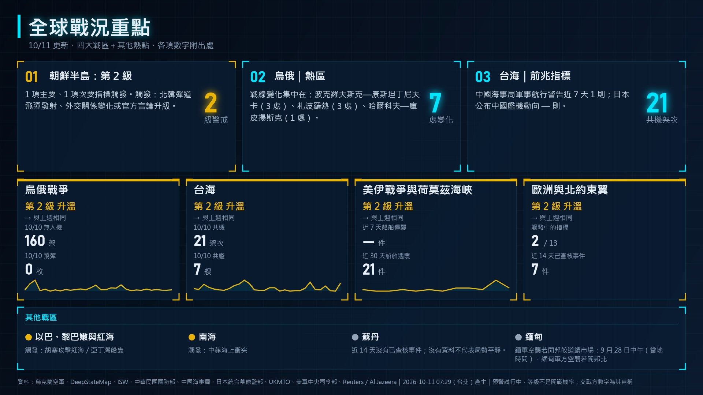
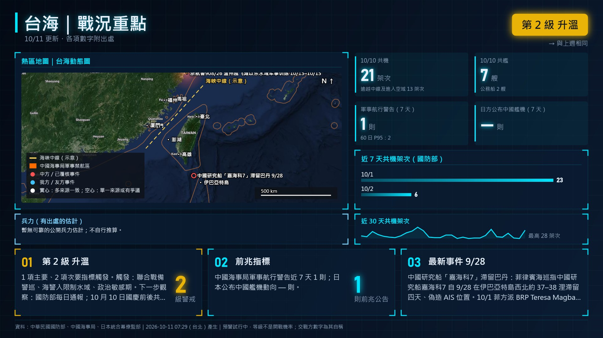
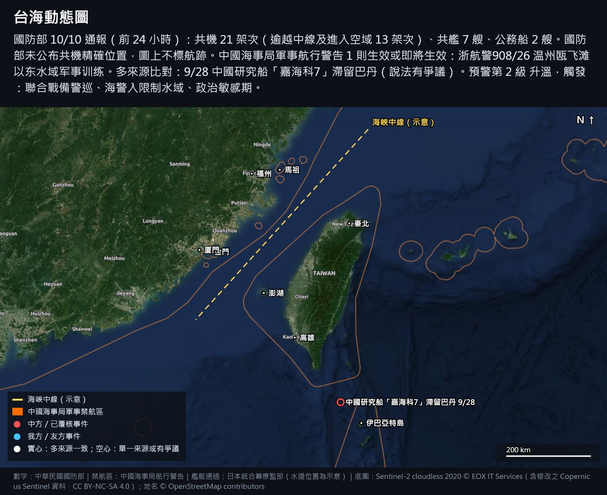
國防部 10/10 通報（前 24 小時）：共機 21 架次（逾越中線及進入空域 13 架次）、共艦 7 艘、公務船 2 艘。國防部未公布共機精確位置，圖上不標航跡。中國海事局軍事航行警告 1 則生效或即將生效：浙航警908/26 温州瓯飞滩以东水域军事训练。多來源比對：9/28 中國研究船「嘉海科7」滯留巴丹（說法有爭議）。預警第 2 級 升溫，觸發：聯合戰備警巡、海警入限制水域、政治敏感期。
比對來源：中國研究船「嘉海科7」滯留巴丹｜gCaptain（轉載路透社）、中國研究船「嘉海科7」滯留巴丹｜Philstar（引述菲律賓海巡）
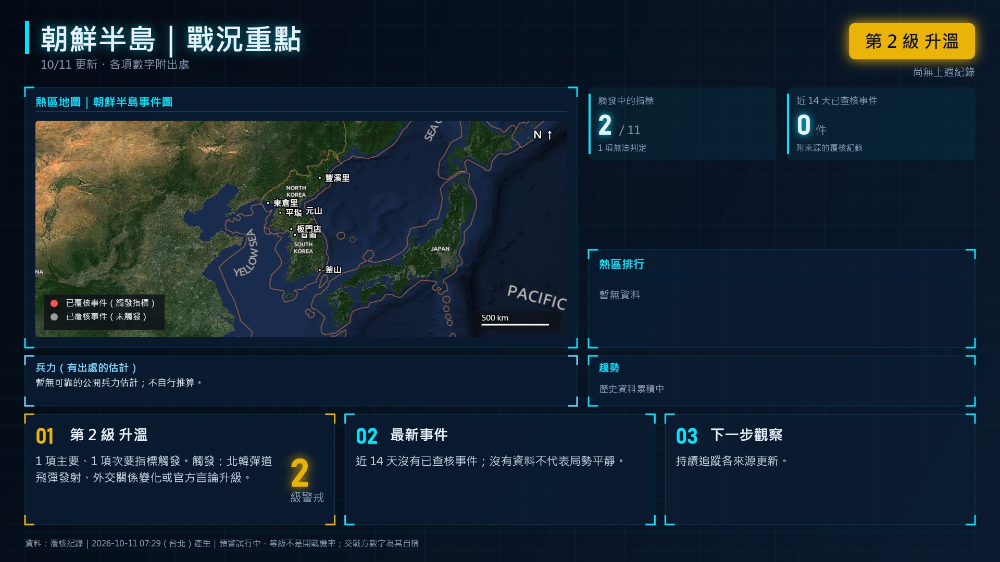
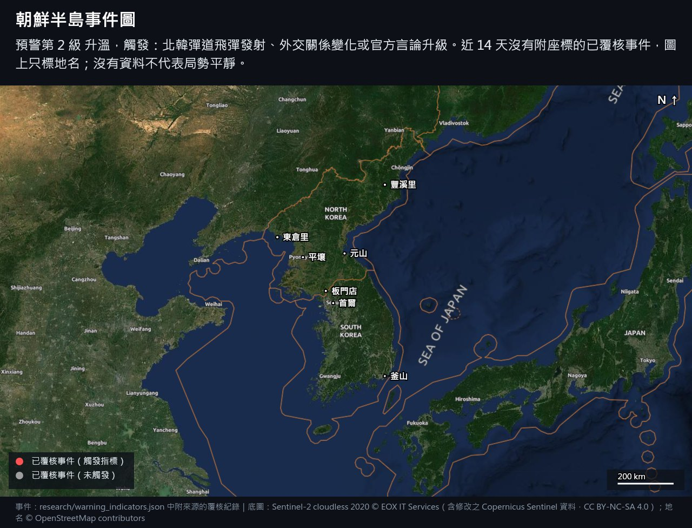
預警第 2 級 升溫，觸發：北韓彈道飛彈發射、外交關係變化或官方言論升級。近 14 天沒有附座標的已覆核事件，圖上只標地名；沒有資料不代表局勢平靜。
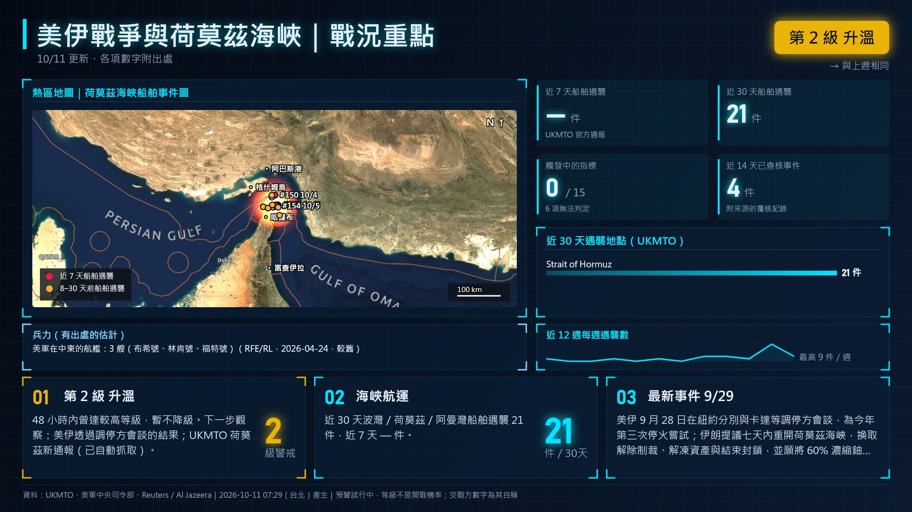
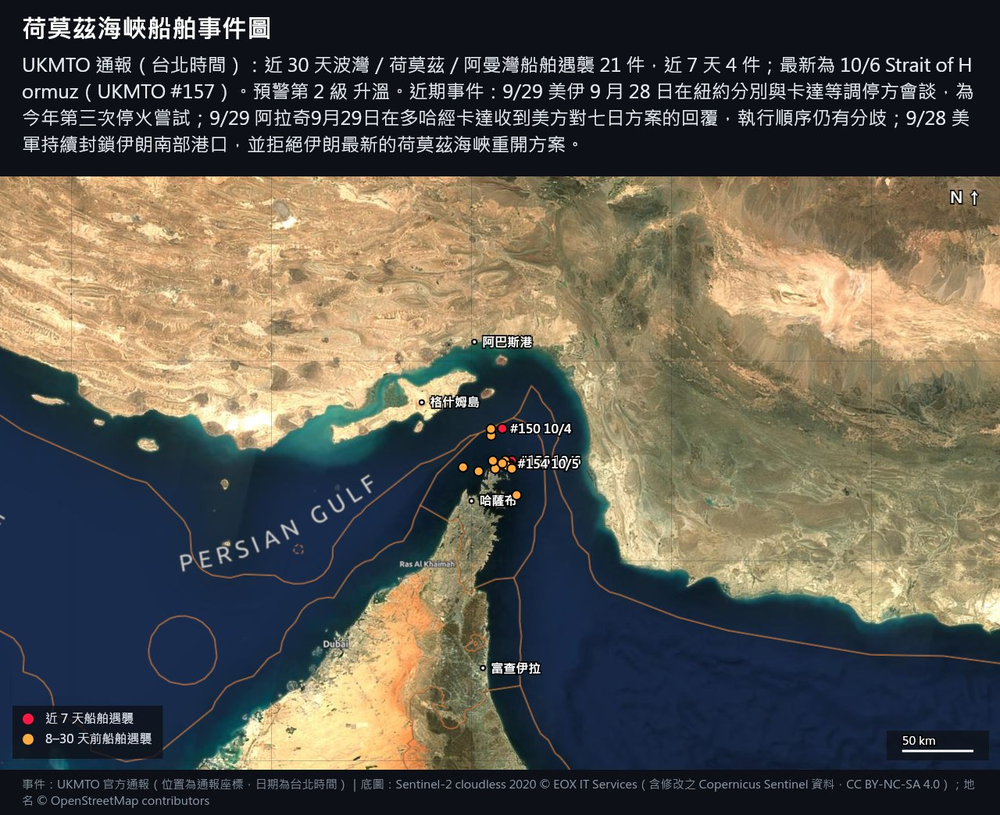
UKMTO 通報（台北時間）：近 30 天波灣／荷莫茲／阿曼灣船舶遇襲 21 件，近 7 天 4 件；最新為 10/6 Strait of Hormuz（UKMTO #157）。預警第 2 級 升溫。近期事件：9/29 美伊 9 月 28 日在紐約分別與卡達等調停方會談，為今年第三次停火嘗試；9/29 阿拉奇9月29日在多哈經卡達收到美方對七日方案的回覆，執行順序仍有分歧；9/28 美軍持續封鎖伊朗南部港口，並拒絕伊朗最新的荷莫茲海峽重開方案。
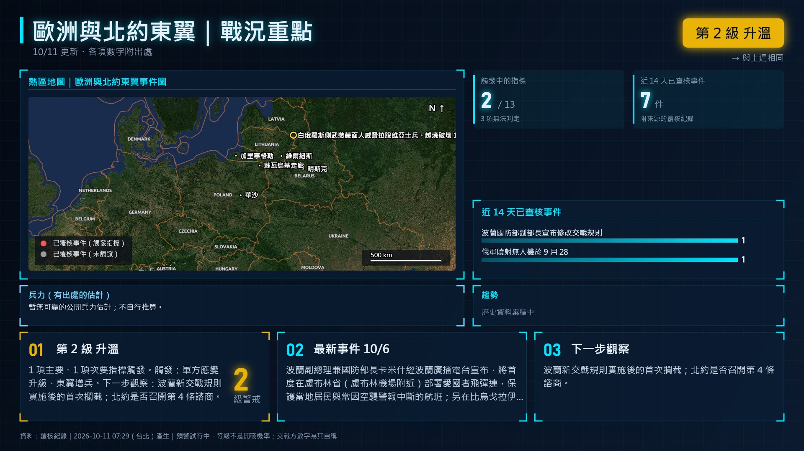
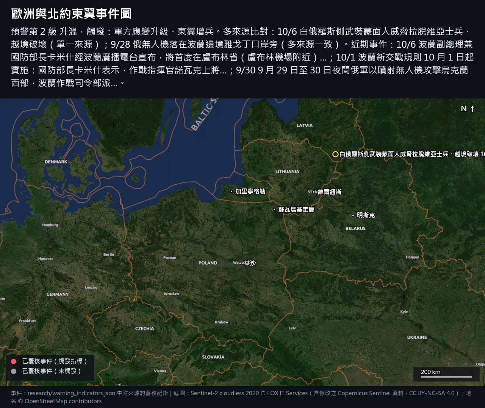
預警第 2 級 升溫，觸發：軍方應變升級、東翼增兵。多來源比對：10/6 白俄羅斯側武裝蒙面人威脅拉脫維亞士兵、越境破壞（單一來源）；9/28 俄無人機落在波蘭邊境雅戈丁口岸旁（多來源一致）。近期事件：10/6 波蘭副總理兼國防部長卡米什經波蘭廣播電台宣布，將首度在盧布林省（盧布林機場附近）…；10/1 波蘭新交戰規則 10 月 1 日起實施：國防部長卡米什表示，作戰指揮官諾瓦克上將…；9/30 9 月 29 日至 30 日夜間俄軍以噴射無人機攻擊烏克蘭西部，波蘭作戰司令部派…。
比對來源：白俄羅斯側武裝蒙面人威脅拉脫維亞士兵、越境破壞｜Meduza、白俄羅斯側武裝蒙面人威脅拉脫維亞士兵、越境破壞｜Kyiv Independent、俄無人機落在波蘭邊境雅戈丁口岸旁｜Kyiv Independent、俄無人機落在波蘭邊境雅戈丁口岸旁｜Censor.net
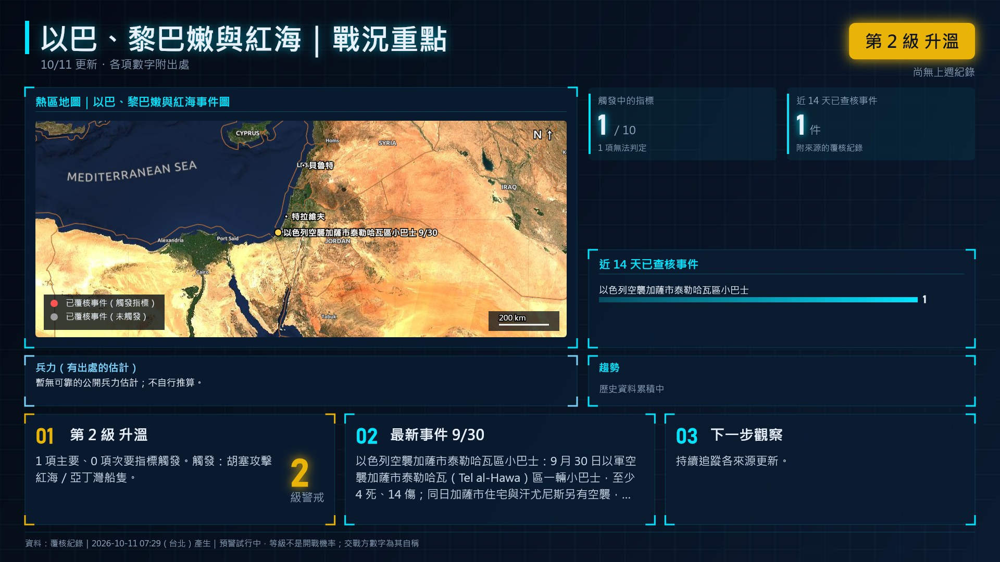
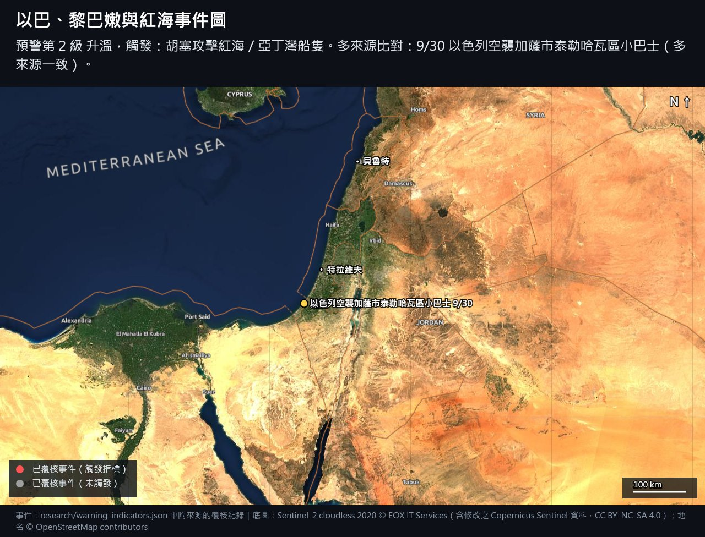
預警第 2 級 升溫，觸發：胡塞攻擊紅海／亞丁灣船隻。多來源比對：9/30 以色列空襲加薩市泰勒哈瓦區小巴士（多來源一致）。
比對來源：以色列空襲加薩市泰勒哈瓦區小巴士｜AP（KRMG 轉載）、以色列空襲加薩市泰勒哈瓦區小巴士｜Reuters（Irish Times 轉載）
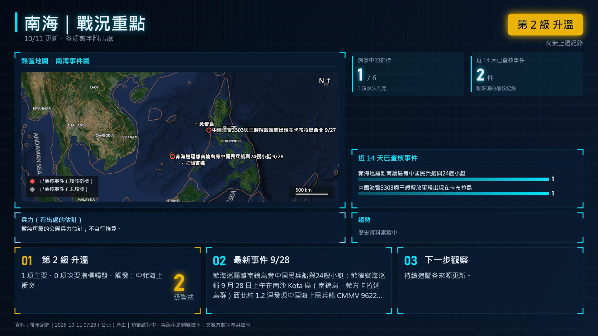
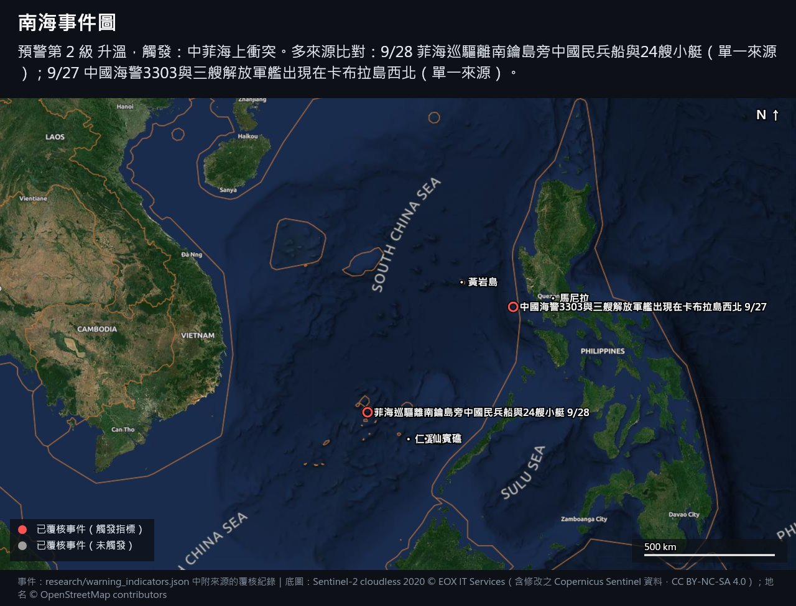
預警第 2 級 升溫，觸發：中菲海上衝突。多來源比對：9/28 菲海巡驅離南鑰島旁中國民兵船與24艘小艇（單一來源）；9/27 中國海警3303與三艘解放軍艦出現在卡布拉島西北（單一來源）。
比對來源：菲海巡驅離南鑰島旁中國民兵船與24艘小艇｜Philstar（引述菲律賓海巡）、菲海巡驅離南鑰島旁中國民兵船與24艘小艇｜BusinessWorld（引述菲律賓海巡）、中國海警3303與三艘解放軍艦出現在卡布拉島西北｜菲律賓通訊社（PIA，引述菲海巡）、中國海警3303與三艘解放軍艦出現在卡布拉島西北｜Philippine Star
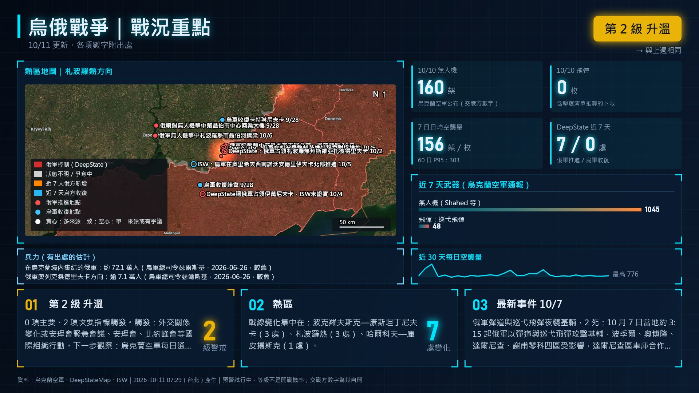
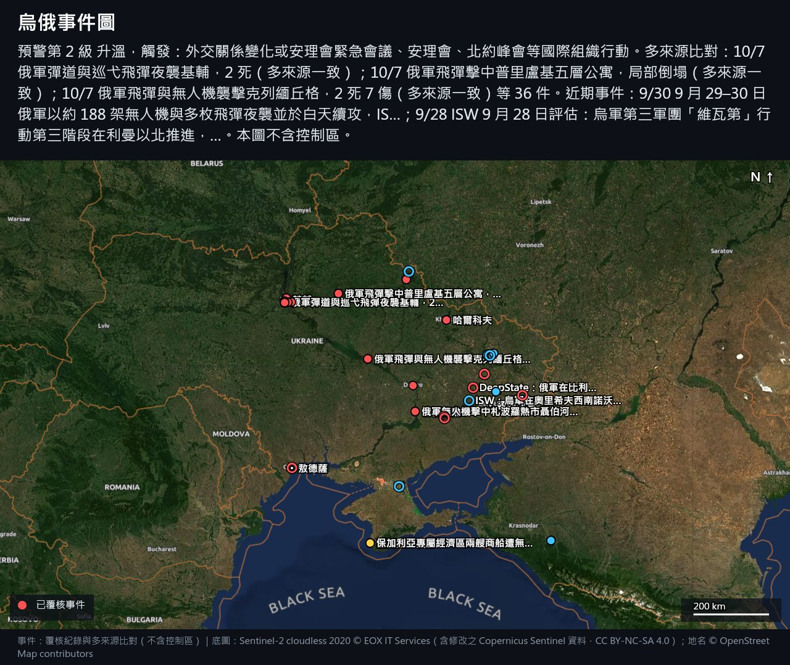
預警第 2 級 升溫，觸發：外交關係變化或安理會緊急會議、安理會、北約峰會等國際組織行動。多來源比對：10/7 俄軍彈道與巡弋飛彈夜襲基輔，2 死（多來源一致）；10/7 俄軍飛彈擊中普里盧基五層公寓，局部倒塌（多來源一致）；10/7 俄軍飛彈與無人機襲擊克列緬丘格，2 死 7 傷（多來源一致）等 36 件。近期事件：9/30 9 月 29–30 日俄軍以約 188 架無人機與多枚飛彈夜襲並於白天續攻，IS…；9/28 ISW 9 月 28 日評估：烏軍第三軍團「維瓦第」行動第三階段在利曼以北推進，…。本圖不含控制區。
比對來源：俄軍彈道與巡弋飛彈夜襲基輔，2 死｜Kyiv Independent、俄軍彈道與巡弋飛彈夜襲基輔，2 死｜Kyiv Post、俄軍飛彈擊中普里盧基五層公寓，局部倒塌｜Kyiv Post、俄軍飛彈擊中普里盧基五層公寓，局部倒塌｜Ukrinform、俄軍飛彈與無人機襲擊克列緬丘格，2 死 7 傷｜Kyiv Post、俄軍飛彈與無人機襲擊克列緬丘格，2 死 7 傷｜EU Today
10/10 烏克蘭空軍通報：無人機 160 架、飛彈 0 枚；7 日日均 156（交戰方公布數字）。
控制區地圖請看原站：DeepStateMap、ISW 每日評估（本站不轉載其地圖）。
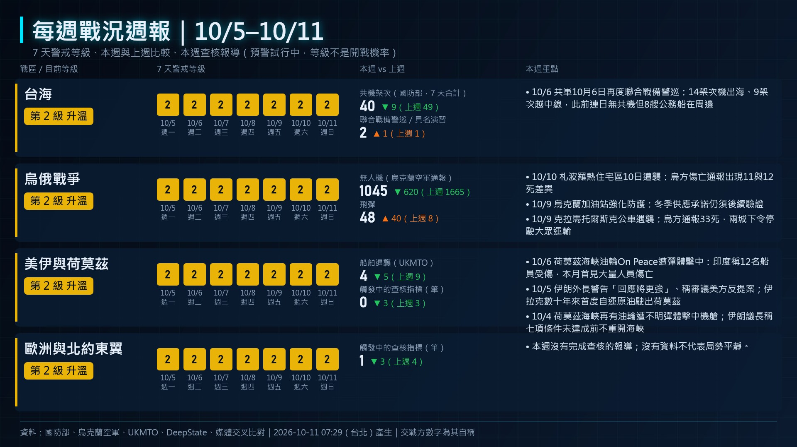
交戰方數字為其自稱。「政府投降」「國家戰敗」一類訊息一律是假訊息。本站為個人整理，非官方資訊。